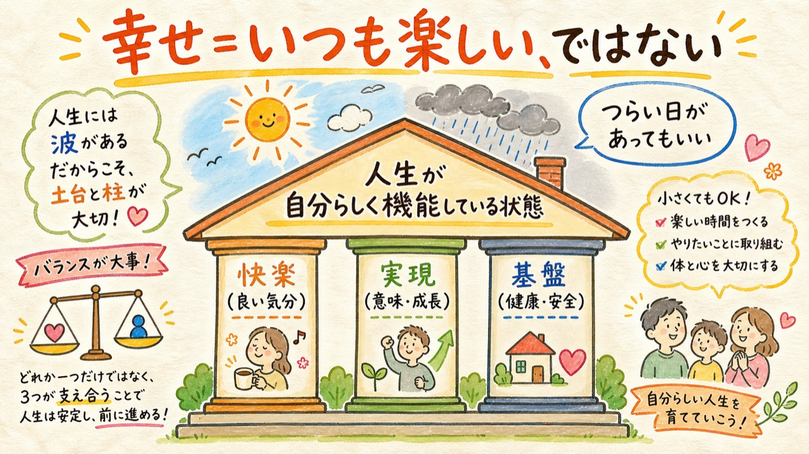
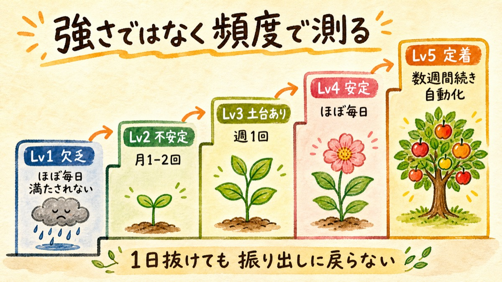
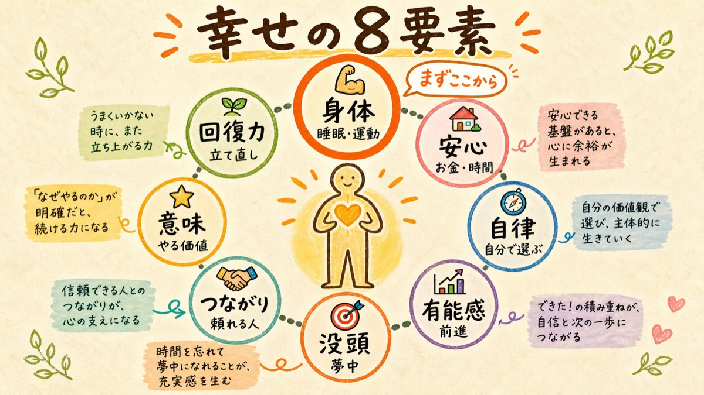
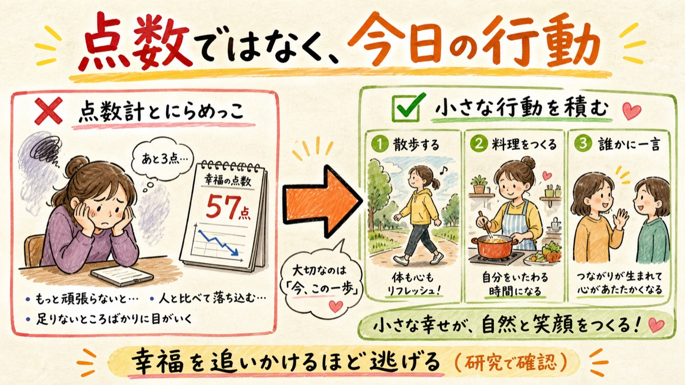

HAPPINESS RESEARCH
メタ分析・一次研究で裏を取った結果のまとめ。あなたのアプリ（幸せ8要素の可視化）にはすでに反映済みです。

唯一よく検証された「幸福の段階」モデルはKeyesのメンタルヘルス連続体（消沈→中間→開花）。判定基準は強度ではなく「どのくらいの頻度で満たされているか」です。これに習慣形成研究（自動化まで平均66日・1日抜けても崩れない）を組み合わせた5段階:
満たされない状態がほぼ毎日続いている
満たされるのは月1〜2回
週1回程度は満たされる
ほぼ毎日満たされる（研究上の「開花」ライン）
ほぼ毎日が数週間続き、意識しなくても回る。他の要素にも良い影響が波及
出典: Keyes 2002 (Mental Health Continuum) / Lally 2010 (習慣形成・66日) ※8要素×5段階を直接検証した研究は無く、この枠組みは研究準拠の設計です


| 要素 | 自分に聞く質問（研究の尺度から） | 効く行動（効果の強さ順に太字） |
|---|---|---|
| 💪 身体 | ぐっすり休め、すがすがしく目覚めたか（WHO-5） | 睡眠改善・運動は全介入中で効果最大級 睡眠g=-0.53 / 歩行・ジョグg=-0.62 起床時刻を固定する／乗務後20分歩く／寝床でスマホを見ない |
| 🏠 安心 | 生活費の心配がないか。時間に追われていないか | お金で「時間」を買う支出は満足度を上げる 家計を1画面に／週1コマ「予定なし枠」を先に確保 |
| 🧭 自律 | やりたいことを自由に選べていると感じるか（自己決定理論の公式訳） | 「選んでいる」と言える形にする — 乗る時間帯・休憩場所を自分で決める／やらされ仕事に自分の理由を1つ付ける |
| 📈 有能感 | していることに有能さを感じるか。立てた目標を達成できているか | 小さな達成行動の予定化（行動活性化）は抑うつに大きな効果 SMD-0.74 5分で終わる達成タスクを毎日1個／売上でなく行動数を記録 |
| 🎯 没頭 | 我を忘れるほど熱中することがどのくらいあるか（PERMA） | フローの条件＝挑戦とスキルの均衡＋明確な目標＋即時フィードバック 通知を切って25分1本勝負／作業に自分ルールの難度を1段足す |
| 🤝 つながり | 必要なとき、人から助けや支えを受けられるか | 人数より質。親切をする側に回ると自分が上がる δ=0.28 1日1つ小さな親切／週1回誰かに近況を一言／「嫌われたはず」と思ったら証拠を書き出す |
| ⭐ 意味 | 自分のしていることは、やる価値があると感じるか | 感謝・味わい（savoring）の習慣 g=0.19（小さいが頑健） 週2-3回「良かったこと3つ＋なぜ」／客とのやりとり1つを言語化して味わう |
| 🌿 回復力 | つらい出来事があっても、すぐ立ち直るほうか | ネガティブ感情を「裁かず受け止める」人ほどメンタルが良い（実験・日誌・縦断で確認） 嫌な感情に名前を付けて「今そう感じている」とだけ書く／3分呼吸 |
主な出典: Scott 2021 (睡眠メタ) / BMJ 2024 (運動ネットワークメタ) / Ekers 2014・Cochrane 2020 (行動活性化) / Curry 2018 (親切) / PNAS 2025 (感謝・163標本) / Ford 2018 (感情受容) / van Agteren 2021 Nature Human Behaviour (419RCT)
STEP 1身体から（睡眠・運動）— 全介入の中で効果量が最大。あなたはすでにジムと自炊を始めており、ここは動いています
STEP 2小さな達成の予定化 — 5分で終わることを毎日1個。成長ツリーがその記録装置です
STEP 3親切と接触 — 1日1つの小さな親切、週1回の近況連絡。効果は本人に返ってきます
STEP 4感謝・味わい — 良かったことを言語化する習慣。まどかに話すこと自体がこれに当たります
